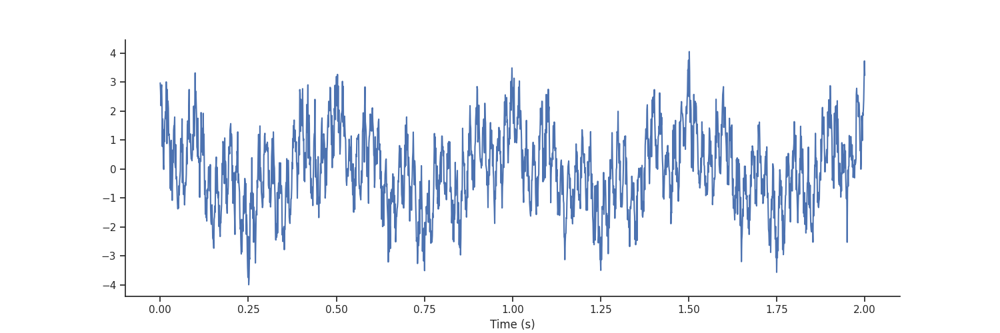
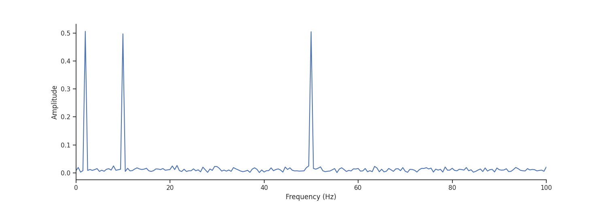
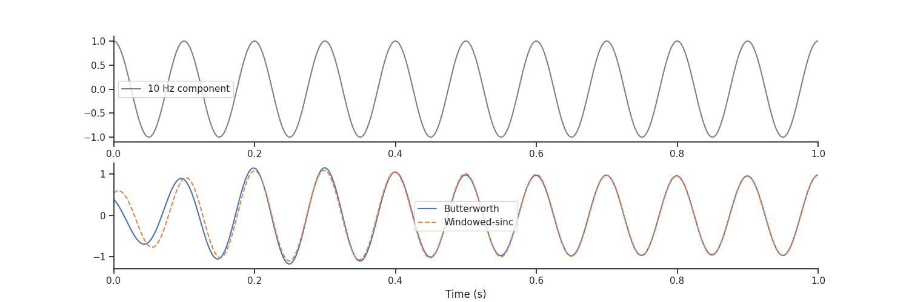
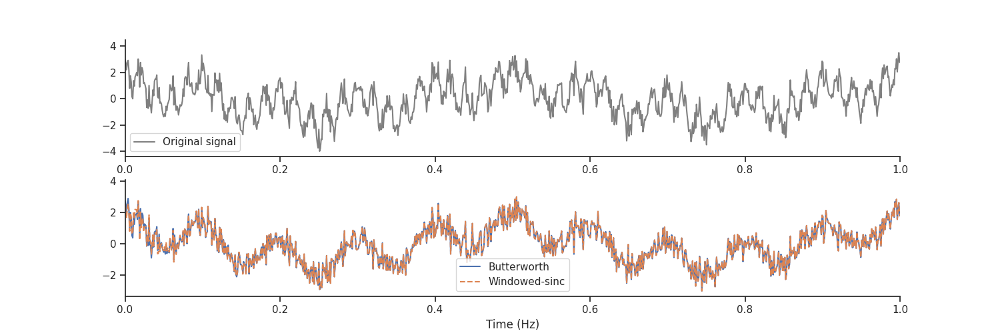
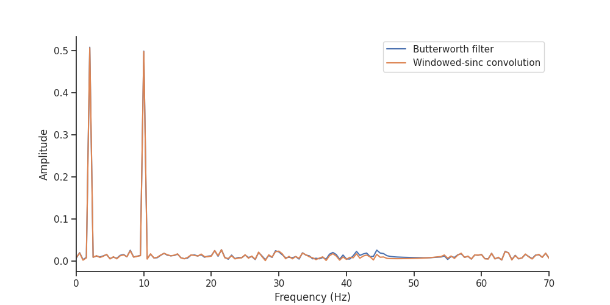
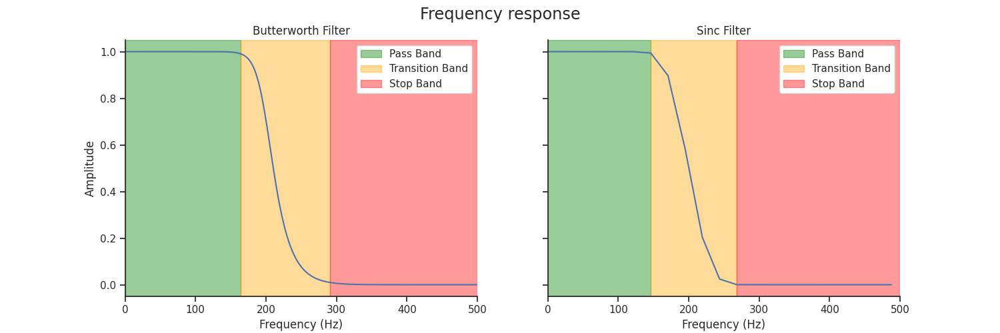
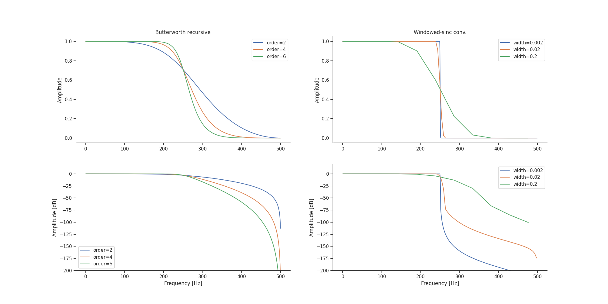
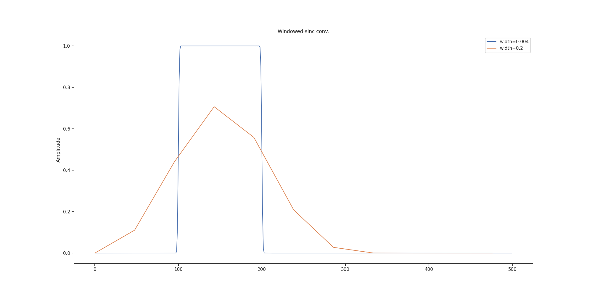
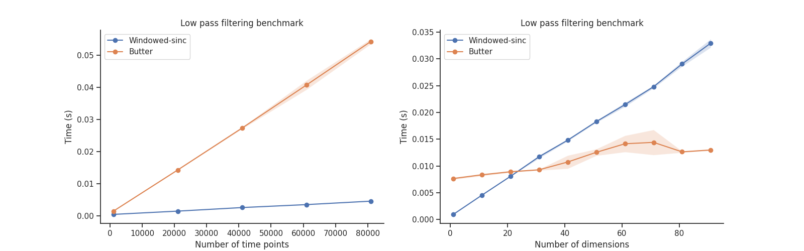

Note
Click here to download the full example code
Filtering
The filtering module holds the functions for frequency manipulation :
nap.apply_bandstop_filternap.apply_lowpass_filternap.apply_highpass_filternap.apply_bandpass_filter
The functions have similar calling signatures. For example, to filter a 1000 Hz signal between 10 and 20 Hz using a Butterworth filter:
Currently, the filtering module provides two methods for frequency manipulation: butter
for a recursive Butterworth filter and sinc for a Windowed-sinc convolution. This notebook provides
a comparison of the two methods.
Warning
This tutorial uses matplotlib for displaying the figure
You can install all with pip install matplotlib requests tqdm seaborn
mkdocs_gallery_thumbnail_number = 1
Now, import the necessary libraries:
import matplotlib.pyplot as plt
import numpy as np
import seaborn
import pynapple as nap
custom_params = {"axes.spines.right": False, "axes.spines.top": False}
seaborn.set_theme(context='notebook', style="ticks", rc=custom_params)
Introduction
We start by generating a signal with multiple frequencies (2, 10 and 50 Hz).
fs = 1000 # sampling frequency
t = np.linspace(0, 2, fs * 2)
f2 = np.cos(t*2*np.pi*2)
f10 = np.cos(t*2*np.pi*10)
f50 = np.cos(t*2*np.pi*50)
sig = nap.Tsd(t=t,d=f2+f10+f50 + np.random.normal(0, 0.5, len(t)))
Let's plot it

Out:
We can compute the Fourier transform of sig to verify that all the frequencies are there.
psd = nap.compute_power_spectral_density(sig, fs, norm=True)
fig = plt.figure(figsize = (15, 5))
plt.plot(np.abs(psd))
plt.xlabel("Frequency (Hz)")
plt.ylabel("Amplitude")
plt.xlim(0, 100)

Out:
Let's say we would like to see only the 10 Hz component.
We can use the function apply_bandpass_filter with mode butter for Butterworth.
Let's compare it to the sinc mode for Windowed-sinc.
Let's plot it
fig = plt.figure(figsize = (15, 5))
plt.subplot(211)
plt.plot(t, f10, '-', color = 'gray', label = "10 Hz component")
plt.xlim(0, 1)
plt.legend()
plt.subplot(212)
# plt.plot(sig, alpha=0.5)
plt.plot(sig_butter, label = "Butterworth")
plt.plot(sig_sinc, '--', label = "Windowed-sinc")
plt.legend()
plt.xlabel("Time (s)")
plt.xlim(0, 1)

Out:
This gives similar results except at the edges.
Another use of filtering is to remove some frequencies. Here we can try to remove the 50 Hz component in the signal.
sig_butter = nap.apply_bandstop_filter(sig, cutoff=(45, 55), fs=fs, mode='butter')
sig_sinc = nap.apply_bandstop_filter(sig, cutoff=(45, 55), fs=fs, mode='sinc', transition_bandwidth=0.004)
Let's plot it
fig = plt.figure(figsize = (15, 5))
plt.subplot(211)
plt.plot(t, sig, '-', color = 'gray', label = "Original signal")
plt.xlim(0, 1)
plt.legend()
plt.subplot(212)
plt.plot(sig_butter, label = "Butterworth")
plt.plot(sig_sinc, '--', label = "Windowed-sinc")
plt.legend()
plt.xlabel("Time (Hz)")
plt.xlim(0, 1)

Out:
Let's see what frequencies remain;
psd_butter = nap.compute_power_spectral_density(sig_butter, fs, norm=True)
psd_sinc = nap.compute_power_spectral_density(sig_sinc, fs, norm=True)
fig = plt.figure(figsize = (10, 5))
plt.plot(np.abs(psd_butter), label = "Butterworth filter")
plt.plot(np.abs(psd_sinc), label = "Windowed-sinc convolution")
plt.legend()
plt.xlabel("Frequency (Hz)")
plt.ylabel("Amplitude")
plt.xlim(0, 70)

Out:
The remaining notebook compares the two modes.
Frequency Responses
We can inspect the frequency response of a filter by plotting its power spectral density (PSD).
To do this, we can use the get_filter_frequency_response function, which returns a pandas Series with the frequencies
as the index and the PSD as values.
Let's extract the frequency response of a Butterworth filter and a sinc low-pass filter.
# compute the frequency response of the filters
psd_butter = nap.get_filter_frequency_response(
200, fs,"lowpass", "butter", order=8
)
psd_sinc = nap.get_filter_frequency_response(
200, fs,"lowpass", "sinc", transition_bandwidth=0.1
)
...and plot it.
# compute the transition bandwidth
tb_butter = psd_butter[psd_butter > 0.99].index.max(), psd_butter[psd_butter < 0.01].index.min()
tb_sinc = psd_sinc[psd_sinc > 0.99].index.max(), psd_sinc[psd_sinc < 0.01].index.min()
fig, axs = plt.subplots(1, 2, sharex=True, sharey=True, figsize=(15, 5))
fig.suptitle("Frequency response", fontsize="x-large")
axs[0].set_title("Butterworth Filter")
axs[0].plot(psd_butter)
axs[0].axvspan(0, tb_butter[0], alpha=0.4, color="green", label="Pass Band")
axs[0].axvspan(*tb_butter, alpha=0.4, color="orange", label="Transition Band")
axs[0].axvspan(tb_butter[1], 500, alpha=0.4, color="red", label="Stop Band")
axs[0].legend().get_frame().set_alpha(1.)
axs[0].set_xlim(0, 500)
axs[0].set_xlabel("Frequency (Hz)")
axs[0].set_ylabel("Amplitude")
axs[1].set_title("Sinc Filter")
axs[1].plot(psd_sinc)
axs[1].axvspan(0, tb_sinc[0], alpha=0.4, color="green", label="Pass Band")
axs[1].axvspan(*tb_sinc, alpha=0.4, color="orange", label="Transition Band")
axs[1].axvspan(tb_sinc[1], 500, alpha=0.4, color="red", label="Stop Band")
axs[1].legend().get_frame().set_alpha(1.)
axs[1].set_xlabel("Frequency (Hz)")
print(f"Transition band butterworth filter: ({int(tb_butter[0])}Hz, {int(tb_butter[1])}Hz)")
print(f"Transition band sinc filter: ({int(tb_sinc[0])}Hz, {int(tb_sinc[1])}Hz)")

Out:
The frequency band with response close to one will be preserved by the filtering (pass band), the band with response close to zero will be discarded (stop band), and the band in between will be partially attenuated (transition band).
Transition Bandwidth (Click to expand/collapse)
Here, we define the transition band as the range where the amplitude attenuation is between 99% and 1%.
The transition_bandwidth parameter of the sinc filter is approximately the width of the transition
band normalized by the sampling frequency. In the example above, if you divide the transition band width
of 122Hz by the sampling frequency of 1000Hz, you get 0.122, which is close to the 0.1 value set.
You can modulate the width of the transition band by setting the order parameter of the Butterworth filter
or the transition_bandwidth parameter of the sinc filter.
First, let's get the frequency response for a Butterworth low pass filter with different order:
butter_freq = {
order: nap.get_filter_frequency_response(250, fs, "lowpass", "butter", order=order)
for order in [2, 4, 6]}
... and then the frequency response for the Windowed-sinc equivalent with different transition bandwidth.
sinc_freq = {
tb: nap.get_filter_frequency_response(250, fs,"lowpass", "sinc", transition_bandwidth=tb)
for tb in [0.002, 0.02, 0.2]}
Let's plot the frequency response of both.
fig = plt.figure(figsize = (20, 10))
gs = plt.GridSpec(2, 2)
for order in butter_freq.keys():
plt.subplot(gs[0, 0])
plt.plot(butter_freq[order], label = f"order={order}")
plt.ylabel('Amplitude')
plt.legend()
plt.title("Butterworth recursive")
plt.subplot(gs[1, 0])
plt.plot(20*np.log10(butter_freq[order]), label = f"order={order}")
plt.xlabel('Frequency [Hz]')
plt.ylabel('Amplitude [dB]')
plt.ylim(-200,20)
plt.legend()
for tb in sinc_freq.keys():
plt.subplot(gs[0, 1])
plt.plot(sinc_freq[tb], label= f"width={tb}")
plt.ylabel('Amplitude')
plt.legend()
plt.title("Windowed-sinc conv.")
plt.subplot(gs[1, 1])
plt.plot(20*np.log10(sinc_freq[tb]), label= f"width={tb}")
plt.xlabel('Frequency [Hz]')
plt.ylabel('Amplitude [dB]')
plt.ylim(-200,20)
plt.legend()

⚠️ Warning: In some cases, the transition bandwidth that is too high generates a kernel that is too short. The amplitude of the original signal will then be lower than expected. In this case, the solution is to decrease the transition bandwidth when using the windowed-sinc mode. Note that this increases the length of the kernel significantly. Let see it with the band pass filter.
sinc_freq = {
tb:nap.get_filter_frequency_response((100, 200), fs, "bandpass", "sinc", transition_bandwidth=tb)
for tb in [0.004, 0.2]}
fig = plt.figure(figsize = (20, 10))
for tb in sinc_freq.keys():
plt.plot(sinc_freq[tb], label= f"width={tb}")
plt.ylabel('Amplitude')
plt.legend()
plt.title("Windowed-sinc conv.")
plt.legend()

Performances
Let's compare the performance of each when varying the number of time points and the number of dimensions.
from time import perf_counter
def get_mean_perf(tsd, mode, n=10):
tmp = np.zeros(n)
for i in range(n):
t1 = perf_counter()
_ = nap.apply_lowpass_filter(tsd, 0.25 * tsd.rate, mode=mode)
t2 = perf_counter()
tmp[i] = t2 - t1
return [np.mean(tmp), np.std(tmp)]
def benchmark_time_points(mode):
times = []
for T in np.arange(1000, 100000, 20000):
time_array = np.arange(T)/1000
data_array = np.random.randn(len(time_array))
startend = np.linspace(0, time_array[-1], T//100).reshape(T//200, 2)
ep = nap.IntervalSet(start=startend[::2,0], end=startend[::2,1])
tsd = nap.Tsd(t=time_array, d=data_array, time_support=ep)
times.append([T]+get_mean_perf(tsd, mode))
return np.array(times)
def benchmark_dimensions(mode):
times = []
for n in np.arange(1, 100, 10):
time_array = np.arange(10000)/1000
data_array = np.random.randn(len(time_array), n)
startend = np.linspace(0, time_array[-1], 10000//100).reshape(10000//200, 2)
ep = nap.IntervalSet(start=startend[::2,0], end=startend[::2,1])
tsd = nap.TsdFrame(t=time_array, d=data_array, time_support=ep)
times.append([n]+get_mean_perf(tsd, mode))
return np.array(times)
times_sinc = benchmark_time_points(mode="sinc")
times_butter = benchmark_time_points(mode="butter")
dims_sinc = benchmark_dimensions(mode="sinc")
dims_butter = benchmark_dimensions(mode="butter")
plt.figure(figsize = (16, 5))
plt.subplot(121)
for arr, label in zip(
[times_sinc, times_butter],
["Windowed-sinc", "Butter"],
):
plt.plot(arr[:, 0], arr[:, 1], "o-", label=label)
plt.fill_between(arr[:, 0], arr[:, 1] - arr[:, 2], arr[:, 1] + arr[:, 2], alpha=0.2)
plt.legend()
plt.xlabel("Number of time points")
plt.ylabel("Time (s)")
plt.title("Low pass filtering benchmark")
plt.subplot(122)
for arr, label in zip(
[dims_sinc, dims_butter],
["Windowed-sinc", "Butter"],
):
plt.plot(arr[:, 0], arr[:, 1], "o-", label=label)
plt.fill_between(arr[:, 0], arr[:, 1] - arr[:, 2], arr[:, 1] + arr[:, 2], alpha=0.2)
plt.legend()
plt.xlabel("Number of dimensions")
plt.ylabel("Time (s)")
plt.title("Low pass filtering benchmark")

Out:
Total running time of the script: ( 0 minutes 5.850 seconds)
Download Python source code: tutorial_pynapple_filtering.py
Download Jupyter notebook: tutorial_pynapple_filtering.ipynb